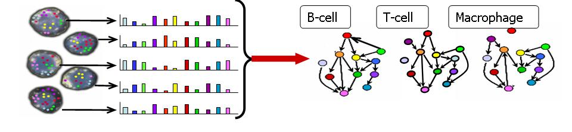

|
 The importance of measuring and modeling molecular networks at individual cell resolution is becoming increasingly evident. While most technologies measure population averages, these obscure the behaviors of distinct sub-populations and cell states. To study subpopulations and sample heterogeneity, we use methods that measure every cell in a sample individually, producing a distribution instead of an average. In an ongoing collaboration with Garry Nolan at Stanford, we are using Mass Cytometry, a novel technology that allows accurate measurement of more than 40 proteins simultaneously per individual cell, which we recently published in Science . In our experiments, cells are stained for both surface and internal epitopes using phosphor-specific antibodies, revealing pathway activation. With this device, in a single tube, we were able to readily detect and characterize all the major cell subsets in the blood and concurrently observe multiple intracellular signaling events, providing a system-wide view. Our goal is to characterize signaling networks in a heterogeneous population of cells and elucidate principles of cellular signal processing in healthy development and disease states, across a diversity of cell types. To analyze data of such massive size and complexity requires powerful new computational methods. We develop novel machine learning algorithms to visualize, analyze and interpret this novel data type. We are currently applying our approaches to hematopoietic and stem cell development. The cyTOF technology can provide quantitative, multidimensional single cell signaling profiles over the entire hematopoietic system, for millions of heterogeneous cells and under diverse perturbations. The data enables modeling both the dynamic response of each individual cell and the collective “computation” of the system as a whole. We are also using this approach to study the intra-tumor heterogeneity in cancer, identifying tumor initiating and drug resistant sub-populations that comprise only a tiny fraction of the tumor and subsequently charactering their behavior. Understanding "cellular computation" requires knowledge of the network structure and the influences among its components. We demonstrated the feasibility of directly deriving signaling networks from phopho-protein measurements in individual cells using Bayesian networks . Perturbing immune cells with drug interventions drove the inference of influence and causality between signaling molecules. Our method automatically discovered de novo, most traditionally established influences between the measured signaling components as well as discovering novel inter-pathway crosstalk: a causal connection of Erk1 on Akt that we confirmed experimentally. success is due to two key factors:
|